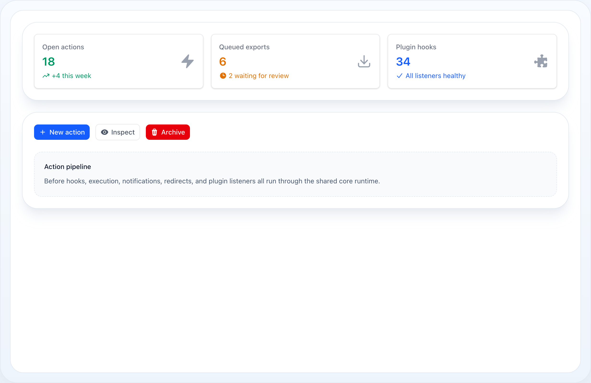
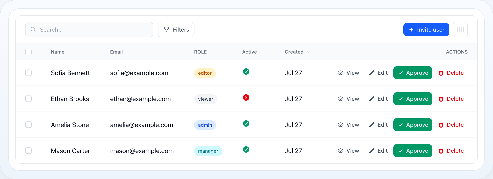

Core
Actions
The Actions module provides row, bulk, and header actions for tables and related UI flows.


Neutral at rest, colour on hover/focus; a solid Approve stays prominent and Delete stays legibly red.
On this page
- Action Types
- Pre-built Actions
- Basic Usage
- Action Groups
- Dynamic Properties
- Confirmation Modal
- Slide-Over
- Modal Appearance
- Form Modal
- Infolist Modal
- Multi-Step Wizard
- Footer Actions
- Stacked (Nested) Modals
- Returning data to the parent
- Navigating the stack
- Lifecycle Hooks
- Halt Execution
- Icon Button
- URL Actions
- Keyboard Shortcuts
- Outlined & Sizing
- Quiet Row Actions
- Extra Attributes
- Standalone Actions (without a table)
- BaseAction API Reference
- Blade Components
The Actions module provides row, bulk, and header actions for tables and related UI flows.
Action Types
| Class | Use Case | Callback Receives |
|---|---|---|
Action |
Row action — single record | fn (Model $record, array $data) |
BulkAction |
Selected records | fn (Collection $records, array $data) |
HeaderAction |
Table header — no record context | fn (array $data) |
ActionGroup |
Groups actions into a dropdown | — |
All extend BaseAction and share the same fluent API for label, icon, color, size, modal, lifecycle.
Pre-built Actions
| Class | Description |
|---|---|
DeleteAction |
Single record delete with confirmation |
DeleteBulkAction |
Bulk delete with confirmation |
RestoreBulkAction |
Bulk restore of soft-deleted records, with confirmation |
ForceDeleteBulkAction |
Bulk permanent delete of soft-deleted records, with confirmation |
EditAction |
Opens edit modal/form |
ViewAction |
Opens view modal |
use NyonCode\WireCore\Actions\DeleteAction;use NyonCode\WireCore\Actions\DeleteBulkAction; $table->actions([DeleteAction::make()]) ->bulkActions([DeleteBulkAction::make()]);Each preset ships the label, icon, color and confirmation modal; you supply the
behavior with ->action(). The soft-delete presets pair with a table scoped to
trashed records (e.g. ->query(User::onlyTrashed())):
use NyonCode\WireCore\Actions\ForceDeleteBulkAction;use NyonCode\WireCore\Actions\RestoreBulkAction; $table->bulkActions([ RestoreBulkAction::make()->action(fn ($records) => $records->each->restore()), ForceDeleteBulkAction::make()->action(fn ($records) => $records->each->forceDelete()),]);Basic Usage
use NyonCode\WireCore\Actions\Action;use NyonCode\WireCore\Actions\BulkAction;use NyonCode\WireCore\Actions\HeaderAction; // Row actionAction::make('edit') ->label('Edit') ->icon('pencil') ->color('primary') ->url(fn (User $record) => route('users.edit', $record)) // Row action with callbackAction::make('archive') ->label('Archive') ->icon('archive') ->action(fn (User $record) => $record->update(['archived' => true])) ->successNotification('Archived!') // Bulk actionBulkAction::make('export') ->label('Export Selected') ->icon('download') ->action(fn (Collection $records) => Excel::download($records)) ->deselectRecordsAfterCompletion() // Header actionHeaderAction::make('create') ->label('New User') ->icon('plus') ->url(route('users.create')) ->badge(fn () => User::whereNull('verified_at')->count()) ->badgeColor('danger') Action Groups
Collapse secondary actions into a dropdown menu. On a phone the menu opens as a
bottom sheet — override with ->sheetOnMobile(false) / ->mobileBreakpoint('md');
see mobile presentation.
use NyonCode\WireCore\Actions\ActionGroup; $table->actions([ Action::make('edit')->icon('pencil'), ActionGroup::make('more', [ Action::make('duplicate') ->icon('copy') ->action(fn ($record) => $record->replicate()->save()), Action::make('archive') ->icon('archive') ->action(fn ($record) => $record->archive()), Action::divider(), // visual separator Action::make('delete') ->icon('trash') ->color('danger') ->requiresConfirmation() ->action(fn ($record) => $record->delete()), ])->divided(), // auto-insert dividers between items]);Groups support badge() and badgeColor() just like HeaderAction.
Dynamic Properties
All properties support Closures — evaluated per-record at render time:
Action::make('toggle') ->label(fn (User $record) => $record->is_active ? 'Deactivate' : 'Activate') ->color(fn (User $record) => $record->is_active ? 'danger' : 'success') ->icon(fn (User $record) => $record->is_active ? 'x' : 'check') ->hidden(fn (User $record) => $record->trashed())Confirmation Modal
Action::make('delete') ->requiresConfirmation() ->modalHeading('Delete this record?') ->modalDescription('This action cannot be undone.') ->modalIcon('trash', 'danger') ->modalSubmitActionLabel('Yes, delete') ->modalCancelActionLabel('Cancel') ->action(fn ($record) => $record->delete());Slide-Over
Action::make('details') ->slideOver() ->stickyHeader() ->stickyFooter() ->modalMaxHeight('60vh');Modal Appearance
Action::make('edit') ->modalWidth('2xl') // sm, md, lg, xl, 2xl, 3xl, 4xl, 5xl ->closeModalOnClickAway() ->closeModalOnEscape() ->slideOverOnMobile() // slide-over on mobile, modal on desktop ->fullScreenOnMobile(); // full screen on mobileForm Modal
When wire-forms is installed, actions can display form modals:
use NyonCode\WireForms\Components\TextInput;use NyonCode\WireForms\Components\Select; Action::make('edit') ->form([ TextInput::make('name')->required(), Select::make('role')->options([ 'admin' => 'Admin', 'editor' => 'Editor', ]), ]) ->fillFormUsing(fn ($record) => $record->only(['name', 'role'])) ->action(fn ($record, array $data) => $record->update($data));The closure may hand back an enum case straight off a cast attribute (fn ($record) => ['role' => $record->role]): the seeded bag collapses every enum to its backing value, because that is what Livewire state carries to the browser and what a Select matches its <option> values against. The choice still saves back through the cast.
A HeaderAction form modal has no record, so its fillFormUsing closure takes no arguments. Use it to seed initial state — and always seed array-typed fields (CheckboxList, Tags, multiple Select) with an empty array so they bind correctly from the first interaction:
HeaderAction::make('create') ->form([ TextInput::make('name')->required(), CheckboxList::make('permissions')->options($permissions)->bulkToggleable(), ]) ->fillFormUsing(fn () => ['name' => '', 'permissions' => []]) ->action(fn (array $data) => Role::create($data));Infolist Modal
Use ->infolist() to open a read-only modal that displays the record — the counterpart of ->form(). The action's record is bound automatically, the modal is not a confirmation, and it shows only a close button (no submit). See Infolists for the full entry reference.
use NyonCode\WireCore\Actions\ViewAction;use NyonCode\WireCore\Infolists\Components\TextEntry; ViewAction::make() ->slideOver() ->infolist([ TextEntry::make('name')->weight('bold'), TextEntry::make('email')->copyable(), TextEntry::make('created_at')->dateTime()->since(), ]);Multi-Step Wizard
use NyonCode\WireCore\Actions\ModalStep; Action::make('create') ->steps([ ModalStep::make('Basic Info') ->description('Enter user details') ->icon('user') ->schema([ TextInput::make('name')->required(), TextInput::make('email')->email()->required(), ]), ModalStep::make('Settings') ->schema([ Select::make('role')->options([...]), Toggle::make('active'), ]), ModalStep::make('Review') ->schema([ Placeholder::make('summary'), ]), ]) ->action(fn ($record, $data) => $record->update($data));A step's ->schema() accepts a Closure to build its fields from data entered in
earlier steps — ->schema(fn (array $data) => [...]). The Closure receives the live
form-data bag even for HeaderAction (which has no record). See
Multi-Step Wizard for a worked example.
Footer Actions
use NyonCode\WireCore\Actions\ModalFooterAction; Action::make('edit') ->form([...]) ->modalFooterActions([ ModalFooterAction::make('save') ->label('Save') ->color('primary') ->submitsForm(), ModalFooterAction::make('save-and-close') ->label('Save & Close') ->action(fn () => $this->saveAndClose()), ]);Stacked (Nested) Modals
Opening an action while a modal is already open stacks the new modal on top of
the current one instead of replacing it. Every open modal is a live frame: the
parent stays a fully reactive form behind the active one (dimmed and click-inert,
but still re-rendering), and closing the top modal returns you to the parent with its
form data intact. There is no special API — any callback that receives the host
$component (a footer action, a field action, an infolist action) can open another
action, and it just stacks:
Action::make('editOrder') ->modalHeading('Edit order') ->form([ TextInput::make('reference')->required(), Select::make('customer_id')->options($customers), ]) ->modalFooterActions([ // Opens a second modal on top of "Edit order". The parent stays open // behind it; closing the child returns here with the form untouched. ModalFooterAction::make('newCustomer') ->label('New customer') ->icon('plus') ->action(fn ($component) => $component->mountAction('createCustomer')), ]) ->action(fn (array $data) => $this->saveOrder($data)); Action::make('createCustomer') ->modalHeading('Create customer') ->form([TextInput::make('name')->required()]) ->action(fn (array $data) => Customer::create($data));Inside a table, open a nested modal from within an action the same way — the host
is passed as $component:
Action::make('review') ->modalHeading('Review') ->modalFooterActions([ ModalFooterAction::make('flag') ->label('Flag for follow-up') ->action(fn ($component, $record) => $component->openActionModal((string) $record->getKey(), 'addFlag')), ]);The nested action can live in the top-level list, or be declared inline next
to the action that opens it with registerActions() — the resolver finds it by
name either way:
Action::make('editOrder') ->registerActions([ Action::make('createCustomer')->form([...])->action(...), ]) ->modalFooterActions([ ModalFooterAction::make('newCustomer') ->action(fn ($component) => $component->mountAction('createCustomer')), ]);Returning data to the parent
Because every level is a live frame in one component, a nested action can write
straight back into an ancestor's form. Every action and footer callback receives
these bindings alongside the usual $data/$record/$component:
$set(path, value)— write your own frame's form data.$setParent(path, value)— write the parent frame's form data.$parentData— read the parent frame's current form data.$setFrame(depth, path, value)— write any frame by stack depth (power users).$arguments— the arbitrary array you passed tomountAction($name, [...]).
This is the canonical "create + select" pattern — a sub-form that fills a field on the form that opened it:
Action::make('editOrder') ->form([ TextInput::make('reference')->required(), Select::make('customer_id')->options(fn () => Customer::pluck('name', 'id')), ]) ->modalFooterActions([ ModalFooterAction::make('newCustomer') ->label('New customer')->icon('plus') ->action(fn ($component) => $component->mountAction('createCustomer')), ]) ->action(fn (array $data) => $this->saveOrder($data)); Action::make('createCustomer') ->modalHeading('Create customer') ->form([TextInput::make('name')->required()]) // Create the record and hand its id back to the parent's Select, then close. ->action(function (array $data, $setParent) { $customer = Customer::create($data); $setParent('customer_id', $customer->id); }); The write re-renders the whole stack, so the parent Select shows the new value
the moment the child closes.
Behaviour notes:
- Stack as deep as you need — each level layers above the previous one with an
increasing
z-index; a single scrim covers everything beneath the top modal so a deep stack never darkens into black. (A safety cap guards against runaway re-entrancy.) - The parent stays live — only the top modal is interactive, but every parent below
it keeps re-rendering, so a
$setParent(...)write shows up behind the active modal immediately. - Close returns to the parent.
Escape, the close button, clicking the backdrop, or a footer action that closes the modal all pop just the top modal and resume the parent. The last close clears the stack. - Form data is preserved per level, so the parent modal is exactly as you left it.
- A footer action that opens a nested modal is not auto-closed afterwards, so the modal it opened stays on top.
Navigating the stack
Two more callback bindings compose deep flows without stacking another layer:
$replace(name, arguments = [])— swap the active modal for another in place. The current top is popped and the named action mounts at the same depth, so parents stay untouched. Use it to move within a modal — a "back to step one" button, or trading an edit modal for a confirm modal — instead of piling on a new level. A replaced row action's record is inherited automatically (passrecord/recordKeyinargumentsto override).$cancelParents(?upTo = null)— close the active modal and its parents. With no argument it dismisses the whole stack (one "Cancel all"); pass an action name to unwind up to and including the nearest ancestor with that name.
Action::make('editOrder') ->form([/* … */]) ->modalFooterActions([ // Swap this modal for a confirmation, in place — no extra layer. ModalFooterAction::make('archive') ->label('Archive…') ->action(fn ($replace) => $replace('confirmArchive')), // Abandon the entire nested flow at once. ModalFooterAction::make('discard') ->label('Discard all') ->action(fn ($cancelParents) => $cancelParents()), ]) ->action(fn (array $data) => $this->saveOrder($data));Both are also public methods ($this->replaceMountedAction(...), $this->cancelParentActions(...))
so you can call them straight from wire:click or from $component.
Lifecycle Hooks
Action::make('publish') ->before(fn ($record) => $record->validate()) ->action(fn ($record) => $record->update(['status' => 'published'])) ->after(fn ($record) => event(new Published($record))) ->successNotification('Published!') ->failureNotification('Publish failed.');Halt Execution
Halt pauses execution and shows a secondary modal for user confirmation:
Action::make('process') ->before(function ($record, Action $action) { if ($record->has_warnings) { $action->halt() ->modalHeading('Warnings Detected') ->modalDescription('There are unresolved warnings. Continue anyway?'); } }) ->action(fn ($record) => $record->process());Icon Button
Action::make('edit') ->icon('pencil') ->iconButton() // renders as icon-only button ->tooltip('Edit record'); // Or hide just the labelAction::make('edit') ->icon('pencil') ->hideLabel();URL Actions
Action::make('view') ->url(fn ($record) => route('users.show', $record), openInNewTab: true); // String URLAction::make('docs') ->url('/docs', openInNewTab: true);Keyboard Shortcuts
Action::make('save')->keyboardShortcut('mod+s');Action::make('delete')->keyboardShortcut('Delete');Uses Alpine.js @keydown under the hood.
Outlined & Sizing
Action::make('cancel') ->outlined() // outline variant, instead of the default solid fill ->color('gray') ->size('sm'); // xs, sm, md, lgQuiet Row Actions
By default a table's row actions render as solid, always-colored buttons. Set the
table's action style to quiet for a calmer, more professional look — actions
rest as neutral text and reveal their color only on hover or keyboard focus, so a
row full of actions stops competing with the data.
$table->actionsStyle('quiet'); // default is 'solid'Behaviour of the quiet style:
- Non-destructive actions rest neutral gray and gain their
->color()on hover/focus. - Destructive actions stay legible at rest (red text), because touch devices have
no hover — a
DeleteActionstill reads as dangerous without interaction. - Every action keeps a visible keyboard focus ring.
Keep a single action prominent by opting it back into the solid fill with ->solid():
$table ->actions([ Action::make('view')->icon('outline:eye'), Action::make('edit')->icon('pencil')->color('primary'), Action::make('approve')->icon('check')->color('success')->solid(), // stays a filled button DeleteAction::make(), // legible red at rest ]) ->actionsStyle('quiet');The quiet style is opt-in; existing tables are unaffected. ->solid() and
->outlined() remain available as per-action overrides.
Extra Attributes
Action::make('custom') ->extraAttributes([ 'data-testid' => 'custom-action', 'x-on:click' => 'console.log("clicked")', ]);Standalone Actions (without a table)
Actions are not table-only. Any Livewire component can declare and fully run them
— modal, slide-over, wizard, confirmation, form, validation and the whole
lifecycle — with the WithActions trait. Declare named actions in actions(),
render the buttons, and drop the modal host once.
use Livewire\Component;use NyonCode\WireCore\Actions\Action;use NyonCode\WireForms\Components\TextInput;use NyonCode\WireForms\Concerns\WithActions; class EditPanel extends Component{ use WithActions; public Offer $offer; /** @return array<int, Action> */ protected function actions(): array { return [$this->editOfferAction()]; } public function editOfferAction(): Action { return Action::make('editOffer') ->label('Edit')->icon('pencil') ->slideOver() ->form([TextInput::make('name')->required()]) ->fillFormUsing(fn () => ['name' => $this->offer->name]) ->action(fn (array $data) => $this->offer->update($data)); } public function render() { return view('livewire.edit-panel'); }}{{-- The button auto-derives wire:click="mountAction('editOffer')" --}}<x-wire-actions::button :action="$this->editOfferAction()" /> {{-- Render once — shows the mounted action's modal/slide-over/wizard/confirmation --}}<x-wire-actions::modal-host :component="$this" />The trait adds these Livewire methods:
| Method | Purpose |
|---|---|
mountAction($name, ['record' => $model]) |
Open the action's modal, or run a plain action immediately. The optional record scopes it to a model. |
callMountedAction() |
Validate the form and run the action callback. |
unmountAction() |
Close the modal and clear its state. |
nextActionModalStep() / prevActionModalStep() |
Wizard navigation. |
callModalFooterAction($name) |
Run a custom footer action. |
The modal form binds to the public actionModalFormData property, so
fillFormUsing, field actions and createOptionForm behave exactly as they do
in a table action modal. WithActions lives in wire-forms (a form-capable host
needs the wire-forms field concerns); the same engine
(NyonCode\WireCore\Actions\Concerns\InteractsWithActions) also backs WithTable.
BaseAction API Reference
Shared across Action, BulkAction, HeaderAction:
->label(string|Closure $label)->icon(string|Closure $icon, ?string $position = null) // position: 'before' | 'after'->color(string|Closure $color) // primary, danger, success, warning, info, gray->size(string $size) // xs, sm, md, lg->outlined(bool $outlined = true)->tooltip(string|Closure $tooltip)->action(Closure $callback)->hidden(bool|Closure $hidden = true)->visible(bool|Closure $visible = true)->disabled(bool|Closure $disabled = true)->requiresConfirmation()->modalHeading(string $heading)->modalDescription(string $description)->modalIcon(string $icon, ?string $color)->modalWidth(string $width)->modalSubmitActionLabel(string $label)->modalCancelActionLabel(string $label)->slideOver()->form(array $components)->fillFormUsing(Closure $fn)->steps(array $steps)->modal(ModalContract $modal) // Modal | SlideOver | ConfirmationDialog | Wizard->before(Closure $fn)->after(Closure $fn)->successNotification(string $message)->failureNotification(string $message)->keyboardShortcut(string $keys)->extraAttributes(array $attrs)Row-action (Action) presentation overrides, honored under Table::actionsStyle('quiet'):
->quiet(bool $quiet = true) // neutral at rest, color on hover/focus (usually set table-wide)->solid(bool $solid = true) // force the solid fill even under a quiet tableBlade Components
<x-wire-actions::button :action="$action" /><x-wire-actions::group :group="$group" /><x-wire-actions::modal-host :component="$this" /> {{-- for a WithActions host --}}